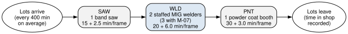
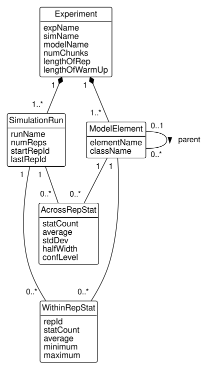
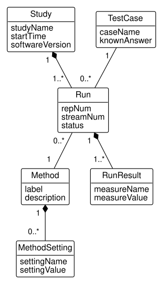

12 Databases for Simulation and Analytics
After reading this chapter you should be able to:
- read a simulation model’s input parameters from the operational database that records them
- navigate the database the KSL writes for a simulation experiment, including its hierarchy of model elements
- summarize replications and compare scenarios with SQL, and judge a difference both statistically and practically
- reshape results between long and wide tables, and choose the shape a design or an analysis needs
- design a database to hold the results of experimental work, and judge when quick tables from data classes will do
Industrial engineers build simulation models to answer questions about systems that are expensive to experiment with directly: will another machine shorten lead times, how much work in process does a line carry, where is the bottleneck. A model needs data going in, the routings, processing times, and capacities of the system, and it produces data coming out, statistics of every response in every replication of every scenario. Both kinds of data belong in a database, and the rest of this book applies to both.
This chapter joins the book to simulation. It builds a small simulation of HG Industries’ hand truck frame line with the KSL, reads the model’s inputs from the production schema, lets the KSL record its results in its own database, and analyzes them with SQL. The simulation itself, how the model runs and why its statistics are computed as they are, is the subject of the KSL textbook (Rossetti 2025), which this chapter cites rather than repeats.
The simulation’s results are stage K of the book’s database: a copy of stage Q with the KSL’s output schema, ksl_db, added by simulating the frame line. To build it, load code/sql/load/through-q.sql into your database and run the companion program dbconcepts.simulation.RunFrameLineKt against it, as Section B.4 describes. The KSL’s random number streams are fixed, so the statistics are the same on every build.
12.1 Input data for models
This section reads a simulation model’s parameters from the database that already records them.
Much of what a model of a plant needs is already in the plant’s operational database. The routing of a part says which work centers it visits and in what order; each operation’s setup and run times say how long it takes; the machines of each work center, and the operators certified to run them, say how many lots can be worked at once. A model that types these numbers into its code is correct on the day it is written and wrong after the next engineering change. A model that reads them from the database stays current with the plant, and a scenario can often be expressed as a change to the data rather than to the model.
HG Industries’ hand truck frame, part FR-110, is cut, welded, and powder coated. Its routing, with the machines of each work center and the number of them that have a certified operator (Section 5.5), is:
SELECT o.operation_number, w.work_center_code,
o.setup_minutes, o.run_minutes_per_unit,
COUNT(DISTINCT m.machine_pk) AS machines,
COUNT(DISTINCT c.machine_fk) AS staffed
FROM production.operation AS o
JOIN production.part AS p
ON p.part_pk = o.manufactured_part_fk
JOIN production.work_center AS w
ON w.work_center_pk = o.work_center_fk
LEFT JOIN production.machine AS m
ON m.work_center_fk = w.work_center_pk
LEFT JOIN production.certification AS c
ON c.machine_fk = m.machine_pk
WHERE p.part_number = 'FR-110'
GROUP BY o.operation_number, w.work_center_code,
o.setup_minutes, o.run_minutes_per_unit
ORDER BY o.operation_number;| operation_number | work_center_code | setup_minutes | run_minutes_per_unit | machines | staffed |
|---|---|---|---|---|---|
| 10 | SAW | 15.0 | 2.50 | 1 | 1 |
| 20 | WLD | 20.0 | 6.00 | 3 | 2 |
| 30 | PNT | 30.0 | 3.00 | 1 | 1 |
Notice the welding work center of Table 12.1: it has three machines, but only two have a certified operator. The third, the robotic welder M-07, was installed in January 2026, and no one is certified on it yet. Whether to train an operator for it is a question the model can answer, and the two counts give the two scenarios: the line as it is staffed, with two welders, and the line with M-07 in use, with three.
Figure 12.1 draws the model. Lots of 100 frames, the part’s lot size, arrive at random, on average one every 400 minutes, and visit the three work centers in the order of the routing. Each work center is a single queue in front of its machines, and a lot’s processing time there is the setup plus the run time of all 100 frames, varied at random from 10 percent below that time to 20 percent above it, since a real lot is never quite average.

Before running a model, compute what you can by hand, as the book has done before every query. A lot’s nominal time at a work center is the setup plus 100 times the run minutes per frame; the random variation, from 0.9 to 1.2 times the nominal time with the nominal time most likely, has a mean of (0.9 + 1.0 + 1.2) / 3 = 1.033 times it. A work center with c machines, receiving a lot every 400 minutes on average, is busy a fraction of the time equal to its mean time per lot divided by 400c:
| Work center | Nominal minutes per lot | Mean minutes per lot | Machines | Fraction of time busy |
|---|---|---|---|---|
| SAW | 15 + 2.5 × 100 = 265 | 273.8 | 1 | 273.8 / 400 = 0.685 |
| WLD | 20 + 6.0 × 100 = 620 | 640.7 | 2 | 640.7 / 800 = 0.801 |
| WLD, with M-07 | 620 | 640.7 | 3 | 640.7 / 1,200 = 0.534 |
| PNT | 30 + 3.0 × 100 = 330 | 341.0 | 1 | 341.0 / 400 = 0.853 |
Table 12.2 already says something important: the powder coat booth, not welding, is the busiest work center, and a third welder does nothing for it. The simulation will show what the hand calculation cannot, how long lots wait, but its utilizations must agree with these, and Section 12.2 checks that they do.
The companion program reads the routing with the query of Table 12.1, as RunFrameLine.kt’s constant ROUTING_SQL:
/** The routing of a part, with each work center's machines: all, and staffed. */
const val ROUTING_SQL = """
SELECT w.work_center_code, o.setup_minutes, o.run_minutes_per_unit,
COUNT(DISTINCT m.machine_pk) AS machines,
COUNT(DISTINCT c.machine_fk) AS staffed_machines
FROM production.operation AS o
JOIN production.part AS p ON p.part_pk = o.manufactured_part_fk
JOIN production.work_center AS w ON w.work_center_pk = o.work_center_fk
LEFT JOIN production.machine AS m ON m.work_center_fk = w.work_center_pk
LEFT JOIN production.certification AS c ON c.machine_fk = m.machine_pk
WHERE p.part_number = ?
GROUP BY o.operation_number, w.work_center_code,
o.setup_minutes, o.run_minutes_per_unit
ORDER BY o.operation_number
"""It turns each row into a RoutingStep, taking the count of machines or of staffed machines as the scenario requires, and the model builds one station per step, a KSL SingleQStation with as many servers as the step has machines, each passing its lots to the next:
/** The stations, one per routing step, in routing order. */
val stations: List<SingleQStation> = routing.mapIndexed { i, step ->
val minutes = step.setupMinutes + step.runMinutesPerUnit * lotSize
SingleQStation(
parent = this,
activityTime = TriangularRV(0.9 * minutes, minutes, 1.2 * minutes, i + 2),
initialCapacity = step.machines,
name = step.workCenterCode
)
}
init {
for (i in 0 until stations.size - 1) stations[i].nextReceiver(stations[i + 1])
stations.last().nextReceiver(Exit())
}The stations of the model are named for the work center codes, SAW, WLD, and PNT, so that the results the KSL records can be traced back to the production schema. A lot that leaves the last station records its time in the shop, in hours:
private inner class Exit : QObjectReceiverIfc {
override fun receive(arrivingQObject: QObject) {
timeInShop.value = (time - arrivingQObject.createTime) / 60.0
lotsCompleted.increment()
workInProcess.decrement()
}
}The program then creates the KSL’s output database in the same PostgreSQL database. Recall from Section 10.4 that BookDatabase.connect() returns a KSL Database opened with the settings in db.properties. The program drops any ksl_db schema an earlier run left, has the KSL run its creation script for the schema, makes ksl_db the default schema, and gives the database to a KSLDatabase:
val db = BookDatabase.connect()
db.executeCommand("DROP SCHEMA IF EXISTS ksl_db CASCADE")
KSLDatabase.executeKSLDbCreationScriptOnDatabase(db)
db.defaultSchemaName = "ksl_db"
val kslDb = KSLDatabase(db)It then runs one experiment per scenario, 30 replications of 30 days each, the first 5 days of each discarded as warm-up:
val scenarios = listOf(
"TwoWelders" to readRouting("FR-110", allMachines = false),
"ThreeWelders" to readRouting("FR-110", allMachines = true)
)
for ((experiment, routing) in scenarios) {
val model = Model("FrameLine", autoCSVReports = false)
model.experimentName = experiment
model.numberOfReplications = 30
model.lengthOfReplication = 30.0 * 24.0 * 60.0
model.lengthOfReplicationWarmUp = 5.0 * 24.0 * 60.0
model.resetStartStreamOption = true
FrameLine(model, routing, lotSize = 100,
meanMinutesBetweenLots = 400.0, name = "Line")
KSLDatabaseObserver(model, kslDb)
model.simulate()
println("$experiment: ${routing.joinToString { "${it.workCenterCode} x${it.machines}" }}")
}Setting resetStartStreamOption makes each experiment start from the same random numbers, so that replication 7 of one scenario sees the same arrivals and the same processing-time variations as replication 7 of the other. This is called common random numbers, and it makes the comparison of Section 12.3 sharper, since the scenarios then differ only in what differs between them. The KSLDatabaseObserver attached to each model writes its results to the database as the replications finish. The next section reads them.
12.2 Simulation output databases
This section navigates the database the KSL writes for its experiments.
A simulation produces a great deal of output: for every response of the model, for every replication, of every experiment, a set of statistics. The KSL records all of it in a database schema of its own, ksl_db, which it creates in any database it is given, here PostgreSQL. It is a schema someone else designed, and reading it uses everything this book has taught. Figure 12.2 draws the core of it as a class model.

Read Figure 12.2 from the top. An Experiment is one scenario of a model, run for a number of replications, and it owns its SimulationRuns and the ModelElements of its model, as the filled diamonds say: deleting an experiment deletes everything it produced, and the KSL’s foreign keys cascade (Section 6.3.6). Model elements form a tree, each with at most one parent: the model, the frame line inside it, the stations inside the line, and the queue and resource inside each station. A WithinRepStat holds the statistics of one response in one replication of one run, and an AcrossRepStat holds the summary of one response over all the replications of a run. Listing 12.1 gives four of the tables.
experiment (exp_id, sim_name, model_name, exp_name,
num_chunks, length_of_rep, length_of_warm_up,
rep_allowed_exec_time, rep_init_option,
reset_start_stream_option, antithetic_option,
adv_next_sub_stream_option, num_stream_advances,
gc_after_rep_option)
primary key: exp_id
alternate key: exp_name
simulation_run (run_id, exp_id_fk, run_name, num_reps,
start_rep_id, last_rep_id,
run_start_time_stamp, run_end_time_stamp,
run_error_msg)
primary key: run_id
alternate key: (exp_id_fk, run_name)
exp_id_fk references exp_id in experiment,
must not be NULL
model_element (exp_id_fk, element_id, element_name,
class_name, parent_id_fk, parent_name,
left_count, right_count)
primary key: (exp_id_fk, element_id)
alternate key: (exp_id_fk, element_name)
exp_id_fk references exp_id in experiment,
must not be NULL
within_rep_stat (id, element_id_fk, sim_run_id_fk, rep_id,
stat_name, stat_count, average, minimum,
maximum, weighted_sum, sum_of_weights,
weighted_ssq, last_value, last_weight)
primary key: id
alternate key: (element_id_fk, sim_run_id_fk, rep_id)
sim_run_id_fk references run_id in simulation_run,
must not be NULLThe KSL’s conventions differ from the book’s. Its keys are named exp_id and run_id rather than experiment_pk, and a foreign key exp_id_fk; its tables were written in upper case, which PostgreSQL folds to the lower case shown. Real databases differ in their conventions, and reading one written by others is a skill of its own. Notice also that within_rep_stat’s element_id_fk refers to a model element but is not declared a foreign key. That is, the key of model_element is the pair (exp_id_fk, element_id), and a statistic stores only half of it; the other half is reached through the statistic’s run. Thus, the database cannot check that a statistic names a real element, and a query that joins the two must match the experiment as well as the element. The experiments of stage K are:
SELECT exp_id, exp_name, num_chunks,
length_of_rep / 1440 AS rep_days,
length_of_warm_up / 1440 AS warm_up_days
FROM ksl_db.experiment
ORDER BY exp_id;| exp_id | exp_name | num_chunks | rep_days | warm_up_days |
|---|---|---|---|---|
| 1 | TwoWelders | 1 | 30 | 5 |
| 2 | ThreeWelders | 1 | 30 | 5 |
The lengths are stored in the model’s time unit, minutes, and the query converts them to days. Each experiment of Table 12.3 ran in one chunk, as one simulation run of 30 replications; the KSL can split a long experiment into chunks run separately, which is why runs are a table of their own.
The model elements of each experiment are stored as a tree, and the KSL stores it in a way this book has not shown. Chapter 4’s product structure tree kept each component’s parent and walked the tree with a recursive query (Section 4.6). The KSL keeps the parent too, and in addition numbers each element twice, with a left_count when a depth-first walk of the tree arrives at it and a right_count when the walk leaves it. This is called the nested set model of a tree (Celko 2012). Its advantage is that the elements below any element are the ones whose numbers lie between its own, so a subtree is found by a simple self-join, with no recursion. The elements below the welding work center’s resource, for example, are:
SELECT child.element_id, child.element_name,
child.class_name, child.left_count,
child.right_count
FROM ksl_db.model_element AS parent
JOIN ksl_db.model_element AS child
ON child.exp_id_fk = parent.exp_id_fk
AND child.left_count > parent.left_count
AND child.right_count < parent.right_count
WHERE parent.exp_id_fk = 1
AND parent.element_name = 'WLD:R'
ORDER BY child.left_count;| element_id | element_name | class_name | left_count | right_count |
|---|---|---|---|---|
| 33 | WLD:R:SeizeCount | Counter | 63 | 64 |
| 34 | WLD:R:NumBusy | TWResponse | 65 | 68 |
| 41 | WLD:R:Util | TWResponseFunction | 66 | 67 |
| 35 | WLD:R:Capacity | TWResponse | 69 | 70 |
| 36 | WLD:R:NumFailures | Counter | 71 | 72 |
| 37 | WLD:R:FailedState | TWResponse | 73 | 74 |
| 38 | WLD:R:IdleState | TWResponse | 75 | 76 |
| 39 | WLD:R:BusyState | TWResponse | 77 | 78 |
| 40 | WLD:R:InactiveState | TWResponse | 79 | 80 |
Each row of Table 12.4 is something the welding resource records. Seven are responses: its utilization, the number of units busy, its capacity, and the time it spends in each state. Two are counters (class_name Counter): the number of times it was seized and the number of its failures. The KSL named them by joining its elements’ names with colons, WLD:R:Util for the utilization of the resource R of the station WLD, and the response names are what an analysis queries by.
The nested set numbers also give a check before the query runs. The welding resource WLD:R has left number 62 and right number 81, and every element below it uses two of the numbers between them. Thus, there are (81 − 62 − 1) / 2 = 9 elements below it, the 9 rows of Table 12.4. Notice that WLD:R:Util lies between the numbers of WLD:R:NumBusy, 65 and 68: the utilization is computed from the number of units busy, and the KSL makes it a child of that response. A join on the parent column alone would have found only the resource’s direct children and missed it; following the parent column to any depth takes a recursive query, as Section 4.6 showed for the product structure.
The statistics of the responses are in within_rep_stat, one row per response per replication. A counter has only its final value in each replication, and the KSL keeps it in a table of its own, within_rep_counter_stat. Thus, LotsCompleted, WLD:R:SeizeCount, and WLD:R:NumFailures have no rows in within_rep_stat. For the time in shop of the first experiment, the first five replications are:
SELECT w.rep_id, w.stat_count,
ROUND(w.average::NUMERIC, 3) AS average,
ROUND(w.minimum::NUMERIC, 3) AS minimum,
ROUND(w.maximum::NUMERIC, 3) AS maximum
FROM ksl_db.within_rep_stat AS w
JOIN ksl_db.simulation_run AS r
ON r.run_id = w.sim_run_id_fk
JOIN ksl_db.experiment AS e ON e.exp_id = r.exp_id_fk
WHERE e.exp_name = 'TwoWelders'
AND w.stat_name = 'TimeInShop'
AND w.rep_id <= 5
ORDER BY w.rep_id;| rep_id | stat_count | average | minimum | maximum |
|---|---|---|---|---|
| 1 | 85 | 28.126 | 19.726 | 47.705 |
| 2 | 85 | 28.981 | 19.795 | 48.766 |
| 3 | 86 | 36.980 | 20.127 | 76.134 |
| 4 | 92 | 31.599 | 19.497 | 57.773 |
| 5 | 82 | 27.002 | 19.303 | 51.369 |
Each row of Table 12.5 summarizes one replication: the number of lots that left the shop after the warm-up (stat_count), their average time in the shop, and the shortest and longest. The replications differ because each used different random numbers, which is the point of replicating: the averages of the replications are independent observations of the same quantity, and the analysis of Section 12.3 works with them.
The KSL also provides views that do the joins once, as Section 9.1 described: within_rep_view gives each response’s and each counter’s value in each replication by experiment name and response name, combining the two tables, and across_rep_view gives each response’s summary over the replications. Their definitions are worth reading. Several repeat the element’s name, which each statistics table also stores as stat_name, beside the key element_id_fk, a copy of the kind Section 7.2 warned of, kept for convenience; and they join tables with commas and WHERE conditions, the older style Section 3.6 mentioned. The utilizations the model recorded, read through across_rep_view, are:
SELECT exp_name, stat_name,
ROUND(average::NUMERIC, 3) AS average,
ROUND(std_dev::NUMERIC, 3) AS std_dev
FROM ksl_db.across_rep_view
WHERE stat_name IN ('SAW:R:Util', 'WLD:R:Util',
'PNT:R:Util')
ORDER BY stat_name, exp_name;| exp_name | stat_name | average | std_dev |
|---|---|---|---|
| ThreeWelders | PNT:R:Util | 0.848 | 0.078 |
| TwoWelders | PNT:R:Util | 0.848 | 0.078 |
| ThreeWelders | SAW:R:Util | 0.693 | 0.077 |
| TwoWelders | SAW:R:Util | 0.693 | 0.077 |
| ThreeWelders | WLD:R:Util | 0.539 | 0.058 |
| TwoWelders | WLD:R:Util | 0.802 | 0.082 |
The simulated utilizations of Table 12.6 agree with the hand calculation of Table 12.2: 0.693 against 0.685 at the saw, 0.802 and 0.539 against 0.801 and 0.534 at welding, 0.848 against 0.853 at paint. The small differences are the random variation of 30 replications. The model is doing what its inputs say, and its waiting times, which the hand calculation could not give, can now be trusted. The next section analyzes them.
12.3 Analyzing experiments with SQL
This section summarizes replications and compares scenarios with SQL.
The KSL summarizes each response over the replications of a run as it finishes, in across_rep_stat: the average of the replication averages, their standard deviation, and the half-width of a confidence interval for the response’s mean. For the responses that matter to the frame line, the summaries are:
SELECT a.stat_name, e.exp_name,
ROUND(a.average::NUMERIC, 3) AS average,
ROUND(a.std_dev::NUMERIC, 3) AS std_dev,
ROUND(a.half_width::NUMERIC, 3) AS half_width
FROM ksl_db.across_rep_stat AS a
JOIN ksl_db.simulation_run AS r
ON r.run_id = a.sim_run_id_fk
JOIN ksl_db.experiment AS e ON e.exp_id = r.exp_id_fk
WHERE a.stat_name IN ('TimeInShop', 'WorkInProcess',
'WLD:Q:TimeInQ', 'PNT:Q:TimeInQ')
ORDER BY a.stat_name, e.exp_name;| stat_name | exp_name | average | std_dev | half_width |
|---|---|---|---|---|
| PNT:Q:TimeInQ | ThreeWelders | 482.438 | 338.937 | 126.561 |
| PNT:Q:TimeInQ | TwoWelders | 235.022 | 166.786 | 62.279 |
| TimeInShop | ThreeWelders | 33.537 | 7.282 | 2.719 |
| TimeInShop | TwoWelders | 33.654 | 7.258 | 2.710 |
| WLD:Q:TimeInQ | ThreeWelders | 0.000 | 0.000 | 0.000 |
| WLD:Q:TimeInQ | TwoWelders | 264.834 | 190.690 | 71.205 |
| WorkInProcess | ThreeWelders | 5.200 | 1.750 | 0.653 |
| WorkInProcess | TwoWelders | 5.217 | 1.748 | 0.653 |
Read Table 12.7 by pairs of rows. The third welder removes the wait at welding: WLD:Q:TimeInQ, the minutes a lot waits for a welder, falls from about 265 to 0. The wait at paint, PNT:Q:TimeInQ, doubles, from about 235 to 482 minutes. The time in the shop, in hours, barely moves. That is, the lots that no longer wait for a welder reach the powder coat booth sooner and wait there instead, as Table 12.2’s utilizations predicted.
12.3.1 A confidence interval computed in SQL
The half-widths of Table 12.7 are computed by the KSL, and an engineer should know how to compute them too, since an analysis often needs a summary the KSL did not store. The replication averages are independent observations of the response’s mean, so the standard confidence interval applies (Rossetti 2025): the average of the n replication averages, plus or minus a half-width of t times their standard deviation divided by the square root of n. Here t is the 0.975 quantile of Student’s t distribution with n − 1 degrees of freedom, for a 95 percent interval.
PostgreSQL has aggregate functions for the average and the sample standard deviation, AVG and STDDEV_SAMP, but no function for the t distribution’s quantiles. The quantile is supplied as a number in the query: for 29 degrees of freedom it is 2.045, from a table of the t distribution, a spreadsheet’s T.INV(0.975, 29), or the KSL. The time in shop, summarized from the replication values of within_rep_view, is:
SELECT exp_name, COUNT(*) AS reps,
ROUND(AVG(rep_value)::NUMERIC, 3) AS average,
ROUND(STDDEV_SAMP(rep_value)::NUMERIC, 3)
AS std_dev,
ROUND((2.045 * STDDEV_SAMP(rep_value)
/ SQRT(COUNT(*)))::NUMERIC, 3) AS half_width
FROM ksl_db.within_rep_view
WHERE stat_name = 'TimeInShop'
GROUP BY exp_name
ORDER BY exp_name;| exp_name | reps | average | std_dev | half_width |
|---|---|---|---|---|
| ThreeWelders | 30 | 33.537 | 7.282 | 2.719 |
| TwoWelders | 30 | 33.654 | 7.258 | 2.710 |
The check is Table 12.7: the averages, 33.537 and 33.654 hours, and the half-widths, 2.719 and 2.710, agree to the last digit shown. Thus, the query computes what the KSL computes. Notice that COUNT(*) is part of the check as well: a count other than 30 would mean a replication was missing, or counted twice.
The two intervals of Table 12.8 overlap almost completely: 33.537 ± 2.719 and 33.654 ± 2.710. Read separately, they say that the difference between the scenarios, about 0.12 hours, is far smaller than the uncertainty in either one. The next example shows that this reading throws information away.
12.3.2 Comparing scenarios by pairing replications
Recall from Section 12.1 that the two experiments used common random numbers: replication 7 of one saw the same arrivals and processing-time variations as replication 7 of the other. The replications are then naturally paired, and the right comparison is of the pairs. The KSL’s view pw_diff_within_rep_view pairs them: it joins within_rep_view to itself on the response name and the replication number, and subtracts. Its a_value and b_value are the two experiments’ values, and a_minus_b their difference, where experiment A is the one recorded later, here ThreeWelders.
Example 12.1 (Is a third welder worth an operator?) HG Industries’ plant manager has been asked to certify an operator on the robotic welder M-07. The welding supervisor argues that lots wait for a welder every day; the manager wants to know what a third welder does for the time a lot of frames spends in the shop, which is what a customer’s lead time depends on. The example assumes stage K.
The request. Estimate the change in the mean time in shop when the third welder is used, with a 95 percent confidence interval.
The hand evaluation. Before SQL averages 30 pairs, we pair five by hand. The first five replications of the time in shop are:
SELECT rep_id,
ROUND(b_value::NUMERIC, 3) AS two_welders,
ROUND(a_value::NUMERIC, 3) AS three_welders,
ROUND(a_minus_b::NUMERIC, 3) AS difference
FROM ksl_db.pw_diff_within_rep_view
WHERE stat_name = 'TimeInShop'
AND rep_id <= 5
ORDER BY rep_id;| rep_id | two_welders | three_welders | difference |
|---|---|---|---|
| 1 | 28.126 | 27.745 | -0.382 |
| 2 | 28.981 | 28.962 | -0.019 |
| 3 | 36.980 | 36.971 | -0.009 |
| 4 | 31.599 | 31.131 | -0.468 |
| 5 | 27.002 | 26.859 | -0.142 |
Look first at the two middle columns of Table 12.9. The replications differ from each other by as much as 10 hours, 26.9 to 37.0, and yet the two values in each row are within half an hour. Replication 3 was a bad month for both scenarios: the same arrivals made the same congestion. The differences remove what the scenarios share and keep what distinguishes them. We average them, one row at a time:
| Replication | Difference (hours) | Running sum |
|---|---|---|
| 1 | −0.382 | −0.382 |
| 2 | −0.019 | −0.401 |
| 3 | −0.009 | −0.410 |
| 4 | −0.468 | −0.878 |
| 5 | −0.142 | −1.020 |
The average of the five differences in Table 12.10 is −1.020 / 5 = −0.204 hours. Their deviations from it are −0.178, 0.185, 0.195, −0.264, and 0.062; the squares sum to 0.1775, and the sample standard deviation is the square root of 0.1775 / 4, or 0.211.
The query. The same summary, first on the five replications and then on all 30, is a GROUP BY over the view:
SELECT COUNT(*) AS reps,
ROUND(AVG(a_minus_b)::NUMERIC, 3) AS average,
ROUND(STDDEV_SAMP(a_minus_b)::NUMERIC, 3)
AS std_dev
FROM ksl_db.pw_diff_within_rep_view
WHERE stat_name = 'TimeInShop'
AND rep_id <= 5;| reps | average | std_dev |
|---|---|---|
| 5 | -0.204 | 0.211 |
Table 12.11 agrees with the hand evaluation: −0.204 and 0.211. For all 30 replications, with the half-width computed as before:
SELECT COUNT(*) AS reps,
ROUND(AVG(a_minus_b)::NUMERIC, 4) AS average,
ROUND(STDDEV_SAMP(a_minus_b)::NUMERIC, 4)
AS std_dev,
ROUND((2.045 * STDDEV_SAMP(a_minus_b)
/ SQRT(COUNT(*)))::NUMERIC, 4) AS half_width,
ROUND(CORR(a_value, b_value)::NUMERIC, 4)
AS correlation
FROM ksl_db.pw_diff_within_rep_view
WHERE stat_name = 'TimeInShop';| reps | average | std_dev | half_width | correlation |
|---|---|---|---|---|
| 30 | -0.1164 | 0.1615 | 0.0603 | 0.9998 |
The check. One row, over 30 replications, was expected; Table 12.12 has it. The average, −0.1164 hours, is the difference of the two averages of Table 12.8, as an average of differences must be. Those averages are rounded to three decimals, and 33.537 − 33.654 gives −0.117; before rounding they are 33.5374 and 33.6538, whose difference is −0.1164.
Interpretation. The 95 percent confidence interval for the change in the mean time in shop is −0.1164 ± 0.0603 hours, from −0.177 to −0.056. It excludes zero, so the third welder does shorten the time in shop; the separate intervals could not show it, and the pairs can because the two scenarios’ values move together, with a correlation of nearly 1 (CORR, the standard SQL aggregate). The standard deviation of the differences, 0.16 hours, is a small fraction of the replications’ own, 7.3 hours, because what the scenarios share cancels.
The difference is also about 7 minutes on a time in shop of 33.6 hours, and that is the answer to the plant manager. A difference can be statistically significant, distinguishable from zero with the replications at hand, without being practically significant, large enough to matter to the decision. Common random numbers and 30 replications made a 7-minute difference visible; they do not make it worth an operator. The paint booth, whose queue the third welder doubled, is where the time goes.
Where it breaks. The view pairs rows by rep_id and requires the two experiments to have the same number of replications (num_reps). An experiment run again with 40 replications silently drops out of the view, and the query summarizes no pairs, with a count of 0 and a NULL average, rather than raising an error. In addition, the pairing is meaningful because the experiments used common random numbers; the view pairs any two experiments with equal replication counts, whether or not they did, and no single column of the database records whether they did. The experiments’ stream options are evidence. Two experiments run one after the other in one program, as Section 12.1 ran them, share random numbers when both have reset_start_stream_option true and the same num_stream_advances, antithetic_option, and adv_next_sub_stream_option, the last of which moves each replication to the next substream so that replication 7 of one experiment draws what replication 7 of the other draws; at stage K both have true, 0, false, and true. Two experiments run as separate programs can share them with reset_start_stream_option false, since each program starts the streams from their beginning. Before trusting a paired comparison, you should compare these columns of ksl_db.experiment for both experiments and know how the experiments were run.
The comparison of Example 12.1 extends to every response at once by grouping on the response name, which shows where the time moved:
SELECT stat_name,
ROUND(AVG(a_minus_b)::NUMERIC, 3) AS average,
ROUND((2.045 * STDDEV_SAMP(a_minus_b)
/ SQRT(COUNT(*)))::NUMERIC, 3) AS half_width
FROM ksl_db.pw_diff_within_rep_view
WHERE stat_name IN ('SAW:Q:TimeInQ', 'WLD:Q:TimeInQ',
'PNT:Q:TimeInQ', 'TimeInShop',
'WorkInProcess')
GROUP BY stat_name
ORDER BY stat_name;| stat_name | average | half_width |
|---|---|---|
| PNT:Q:TimeInQ | 247.417 | 68.080 |
| SAW:Q:TimeInQ | 0.000 | 0.000 |
| TimeInShop | -0.116 | 0.060 |
| WLD:Q:TimeInQ | -264.834 | 71.197 |
| WorkInProcess | -0.017 | 0.009 |
The saw’s row of Table 12.13 is a check of the experiment itself. The saw comes before welding, so a third welder cannot change a lot’s wait at the saw, and with common random numbers the waits are the same in every replication: the difference is 0.000 with a half-width of 0.000. A nonzero difference there would mean the scenarios did not share their random numbers. The welding queue loses about 265 minutes and the paint queue gains about 247, and the time in shop and the work in process are nearly unchanged.
The KSL can also make these comparisons itself, with its MultipleComparisonAnalyzer class, which computes the pairwise differences of any number of scenarios (Rossetti 2025). The SQL is worth knowing because the results are in the database long after the program that produced them, and because a question the KSL’s reports do not answer is one query away. The next section turns to databases that analysts design for their own experiments.
12.4 Designing a database for experimental work
This section describes the databases that analysts design to hold their own experimental work.
The KSL’s ksl_db is a database someone designed to hold the results of simulation experiments. Analysts design such databases for their own work as well. An engineer who compares optimization algorithms on a set of test problems, or who tests how well a distribution-fitting procedure recovers a known distribution, produces thousands of results, and the questions asked of them afterwards are grouping queries: which algorithm came within 1 percent of the optimum most often, and how often the procedure chose the right family at each sample size. The KSL and its examples contain two databases of this kind, one for benchmarking the KSL’s simulation optimization solvers and one for testing its distribution fitting. This section describes their common shape, the choice between long and wide tables, the other design decisions the shape raises, and the KSL’s quick way of building one; the exercises of Section 12.6 carry it into mini-projects.
12.4.1 The common shape
Figure 12.3 draws the shape as a class model. A Study is one execution of the experimental plan, recorded with when it ran and with which version of the software. A Method is one thing being tested, such as a solver with its settings, and its MethodSettings record those settings by name. A TestCase is one thing it is tested on, such as a benchmark problem or a true distribution, often with a known answer to measure against. A Run is one method on one test case, one replication, with the random number stream it used, and its RunResults record what it produced by name.

Recall Figure 12.2: the KSL’s own output database has the same shape, with an Experiment for a study and a scenario, SimulationRuns for runs, and statistics for results. The shape recurs because experimental work has a grid: methods crossed with test cases crossed with replications. Each cell of the grid is a run, and every question asked of the study groups the runs by one side of the grid or another.
12.4.2 Long and wide tables
The results of experimental work can be stored in two shapes, and the choice between them comes up in nearly every study. An observation is one thing measured, such as one replication, and a variable is one thing measured about it, such as its time in shop. A wide table has a row per observation and a column per variable. A long table has a row per observation and variable, with one column naming the variable and another holding its value. The two hold the same facts in different shapes.
The KSL stores its statistics long. Recall from Section 12.2 that within_rep_stat has a row per response per replication and within_rep_counter_stat a row per counter per replication; within_rep_view combines the two and reduces each row to the replication, the response’s name, and its value. For the first three replications of TwoWelders and three of its responses, the long table is:
SELECT rep_id, stat_name,
ROUND(rep_value::NUMERIC, 3) AS rep_value
FROM ksl_db.within_rep_view
WHERE exp_name = 'TwoWelders'
AND stat_name IN ('LotsCompleted', 'TimeInShop',
'WorkInProcess')
AND rep_id <= 3
ORDER BY rep_id, stat_name;| rep_id | stat_name | rep_value |
|---|---|---|
| 1 | LotsCompleted | 85.000 |
| 1 | TimeInShop | 28.126 |
| 1 | WorkInProcess | 3.908 |
| 2 | LotsCompleted | 85.000 |
| 2 | TimeInShop | 28.981 |
| 2 | WorkInProcess | 4.094 |
| 3 | LotsCompleted | 86.000 |
| 3 | TimeInShop | 36.980 |
| 3 | WorkInProcess | 5.904 |
Table 12.14 has 3 × 3 = 9 rows, one per replication and response. Let’s turn it wide by hand. The first step groups the rows by the observation, the replication, giving three groups of three rows. The second step makes one row of each group, placing each value in the column its stat_name names:
| Replication | Lots completed | Time in shop (hours) | Work in process |
|---|---|---|---|
| 1 | 85.000 | 28.126 | 3.908 |
| 2 | 85.000 | 28.981 | 4.094 |
| 3 | 86.000 | 36.980 | 5.904 |
Each cell of Table 12.15 is one row of Table 12.14: the row’s rep_id chooses the cell’s row, its stat_name the cell’s column, and its rep_value fills the cell. Nine rows of three columns became three rows of four, and no value was added or lost.
The grouping and placing are a GROUP BY on the observation and one FILTER per variable (Section 4.4). Each group holds one row for each response, so MAX merely returns the one value its FILTER keeps:
SELECT rep_id,
ROUND((MAX(rep_value) FILTER (
WHERE stat_name = 'LotsCompleted'))::NUMERIC, 3)
AS lots_completed,
ROUND((MAX(rep_value) FILTER (
WHERE stat_name = 'TimeInShop'))::NUMERIC, 3)
AS time_in_shop,
ROUND((MAX(rep_value) FILTER (
WHERE stat_name = 'WorkInProcess'))::NUMERIC, 3)
AS work_in_process
FROM ksl_db.within_rep_view
WHERE exp_name = 'TwoWelders'
AND rep_id <= 3
GROUP BY rep_id
ORDER BY rep_id;| rep_id | lots_completed | time_in_shop | work_in_process |
|---|---|---|---|
| 1 | 85.000 | 28.126 | 3.908 |
| 2 | 85.000 | 28.981 | 4.094 |
| 3 | 86.000 | 36.980 | 5.904 |
Table 12.16 matches the hand evaluation of Table 12.15, row for row. Notice that the WHERE clause no longer lists the responses: a response without a FILTER column is grouped and dropped. Thus, the long table’s list of variables becomes the wide query’s list of columns, and a new variable means a new column in the query.
The wide shape makes a calculation across variables a calculation within a row. Little’s law says that, over a long run, the average number of lots in the shop equals the rate at which lots leave it times the average time each spends there (Rossetti 2025). Each replication observes 25 days, or 600 hours, after its warm-up, so its throughput is its lots completed divided by 600, and the law predicts its work in process:
WITH wide AS (
SELECT rep_id,
MAX(rep_value) FILTER (
WHERE stat_name = 'LotsCompleted') AS lots,
MAX(rep_value) FILTER (
WHERE stat_name = 'TimeInShop') AS hours,
MAX(rep_value) FILTER (
WHERE stat_name = 'WorkInProcess') AS wip
FROM ksl_db.within_rep_view
WHERE exp_name = 'TwoWelders'
GROUP BY rep_id
)
SELECT rep_id,
ROUND((lots / 600 * hours)::NUMERIC, 3)
AS predicted_wip,
ROUND(wip::NUMERIC, 3) AS observed_wip
FROM wide
WHERE rep_id <= 5
ORDER BY rep_id;| rep_id | predicted_wip | observed_wip |
|---|---|---|
| 1 | 3.985 | 3.908 |
| 2 | 4.106 | 4.094 |
| 3 | 5.300 | 5.904 |
| 4 | 4.845 | 4.716 |
| 5 | 3.690 | 3.635 |
The common table expression (Section 3.10) builds the wide table, and the final query does arithmetic across its columns. The prediction and the observation of Table 12.17 agree closely in most replications. Replication 3, the congested month of Table 12.9, differs most, since the lots still in the shop when the replication ends count in its work in process but have no time in shop to report. In the long table, the same check needs a self-join per variable, one copy of the table for each of the three responses.
Going the other way, from wide to long, takes one SELECT per variable, combined with UNION ALL (Section 3.9). Each SELECT names its variable as a constant and returns its column as the value:
WITH wide AS (
SELECT rep_id,
MAX(rep_value) FILTER (
WHERE stat_name = 'LotsCompleted') AS lots,
MAX(rep_value) FILTER (
WHERE stat_name = 'TimeInShop') AS hours,
MAX(rep_value) FILTER (
WHERE stat_name = 'WorkInProcess') AS wip
FROM ksl_db.within_rep_view
WHERE exp_name = 'TwoWelders'
AND rep_id <= 3
GROUP BY rep_id
)
SELECT rep_id, 'LotsCompleted' AS stat_name,
ROUND(lots::NUMERIC, 3) AS rep_value
FROM wide
UNION ALL
SELECT rep_id, 'TimeInShop', ROUND(hours::NUMERIC, 3)
FROM wide
UNION ALL
SELECT rep_id, 'WorkInProcess', ROUND(wip::NUMERIC, 3)
FROM wide
ORDER BY rep_id, stat_name;| rep_id | stat_name | rep_value |
|---|---|---|
| 1 | LotsCompleted | 85.000 |
| 1 | TimeInShop | 28.126 |
| 1 | WorkInProcess | 3.908 |
| 2 | LotsCompleted | 85.000 |
| 2 | TimeInShop | 28.981 |
| 2 | WorkInProcess | 4.094 |
| 3 | LotsCompleted | 86.000 |
| 3 | TimeInShop | 36.980 |
| 3 | WorkInProcess | 5.904 |
The check is Table 12.14: Table 12.18 has the same nine rows. UNION ALL is the right operator, since the three SELECTs cannot produce the same row twice and UNION would only spend work looking for duplicates.
Neither shape is right for every purpose. Table 12.19 compares them on the matters that decide a design.
| Matter | Long | Wide |
|---|---|---|
| Adding a variable | new rows with a new name; no change to the table | a new column: ALTER TABLE, and every query that lists the columns changes |
| Types and constraints | one value column, one type for every variable | each column its own type, NOT NULL, and CHECK |
| A missing value | the row is absent | a NULL in the row |
| One summary for every variable | a single GROUP BY on the name |
one aggregate per column |
| A calculation across variables | a self-join per variable, or a pivot first | arithmetic within a row |
| What statistical tools expect | grouped summaries and plots by variable | regression, correlation, and scatter plots: a row per observation |
What counts as an observation and what as a variable depends on the question, not on the data. For the summaries of Section 12.3, a replication of one experiment is an observation and each response a variable. For the paired comparison of Example 12.1, the observation is a replication and each experiment is a variable: pw_diff_within_rep_view is that wide table, with a_value and b_value as its two columns, so that the difference is arithmetic within a row.
A table can also be too wide. A spreadsheet with a column for each replication, time_rep1, time_rep2, and so on to time_rep30, has put values of a variable, the replication number, into its column names. It is the repeating group that first normal form forbids (Section 7.4): a 31st replication changes the table, and an average over the replications is 30 columns added by hand rather than one AVG. The rule that keeps a table from either excess is the one statisticians call tidy data (Wickham 2014): each variable a column, each observation a row. Thus, a study stores its results in the shape that keeps its rules, typed columns for a fixed set of variables and a long table for an open one, and reshapes them for each analysis with a query or a view.
12.4.3 The design decisions
The shape of Figure 12.3 leaves open other decisions as well, which the rest of this book has prepared you to make.
- Record what produced each result. A result without its method’s settings, its random number stream, and the software version that computed it cannot be reproduced, or trusted when it surprises you. These are columns and rows like any other, and they are cheap to store and impossible to recover later.
- Choose between long and wide results (Section 12.4.2). Wide gives each variable its own type and constraints; long accepts a new variable without a change to the schema, which matters when different methods report different things. The KSL’s benchmark database stores its solvers’ settings, and their state at each iteration, long, since different solvers have different ones.
- Store the raw results and derive the summaries. A proportion correct, an average gap, or a count of true positives can be computed by a query from the runs. Stored as well, it is a copy that can disagree with the runs it summarizes, the redundancy of Section 7.2.
- Key the grid. A run is identified by its study, method, test case, and replication, and that combination is an alternate key even when a surrogate such as
run_pkis the primary key (Section 6.6). Declaring it prevents a run from being recorded twice when a study is resumed. - Link to data you do not own by its alternate keys. A study that uses the plant’s work centers or the KSL’s experiments refers to them by their codes and names, and keeps its own tables in a schema of its own.
12.4.4 Quick tables from data classes
A designed schema takes time, and a study often needs a database the day it starts. Recall from Section 10.4 that a Kotlin data class that extends the KSL’s DbTableData describes a table, naming it and its key fields, and that the KSL reads and writes the table’s rows through the class. The KSL can also create the table from the class, with a column for each var property. The class for a solver run might be:
data class SolverRun(
var runId: Int = -1,
var problemName: String = "",
var solverLabel: String = "",
var repNum: Int = 0,
var bestObjective: Double = 0.0,
var numReplications: Int = 0,
var gap: Double? = null
) : DbTableData("solver_run", listOf("runId"))The program QuickTable.kt asks the KSL for the statement it would use to create the table:
println(SolverRun().createTableSQLStatement())CREATE TABLE solver_run (
runId INTEGER NOT NULL,
problemName VARCHAR(512) NOT NULL,
solverLabel VARCHAR(512) NOT NULL,
repNum INTEGER NOT NULL,
bestObjective DOUBLE NOT NULL,
numReplications INTEGER NOT NULL,
gap DOUBLE,
PRIMARY KEY(runId)
)
Read the statement against the class. Each property became a column, with its Kotlin type mapped to an SQL type and NOT NULL wherever the type does not allow null; gap, a Double?, may be NULL. The key fields became the primary key. Nothing else did: no foreign keys, no UNIQUE or CHECK constraints, and the column names are the properties’ camel case, which PostgreSQL folds to lower case (runId becomes runid). The type DOUBLE is not PostgreSQL’s spelling, which is DOUBLE PRECISION; the KSL builds these quick databases as SQLite or Derby files (Database.createSimpleDb), which accept it, and PostgreSQL refuses the statement as it stands.
Quick tables suit a study that one program writes and one analyst reads, where the tables are few and the rules live in the program that fills them. A designed schema is worth its time when the database will outlive the program, be shared, or be joined to other data, since then the rules must live in the database, where every program that writes it must obey them. The mini-projects of Section 12.6 ask you to design both kinds and to compare them.
12.5 Summary
A simulation model’s inputs belong in the database that records them. A routing, its times, and the machines and operators of each work center are already in the production schema; a model that reads them stays current with the plant, and a scenario can be a change to the data.
The KSL records every experiment in a database schema of its own. Experiments own their runs and model elements; statistics are recorded per response per replication, and summarized across replications. The model elements form a tree stored as a nested set, whose subtrees a self-join finds.
Replications are summarized, and scenarios compared, with grouping queries. The average, standard deviation, and half-width of a response over its replications are AVG, STDDEV_SAMP, and a t quantile supplied as a number, and they agree with what the KSL stores. With common random numbers, pairing the replications of two scenarios cancels what they share, and the paired difference’s interval is far narrower than the separate intervals.
A difference can be statistically significant without being practically significant. The third welder shortens the mean time in shop by an amount the pairs can distinguish from zero, about 7 minutes in 33.6 hours, because the queue moves from welding to paint. The decision turns on the size of the difference, not on its significance.
The same results can be stored long or wide. A wide table has a row per observation and a column per variable; a long table has a row per observation and variable. GROUP BY with FILTER turns long into wide, and UNION ALL turns wide into long. Long accepts new variables and summarizes them all at once; wide gives each variable its type and puts a calculation across variables in one row. Which is which depends on the question, and a column per replication is the repeating group that first normal form forbids.
A database for experimental work has a common shape. Methods are run on test cases, replicated, within a study, and each run records its results. Its design records what produced each result, chooses between long and wide results, derives summaries rather than storing them, keys the grid, and links to data it does not own by alternate keys. The KSL’s quick tables from data classes suit a study one program writes; a designed schema suits a database that is shared, joined, or kept.
12.6 Exercises
Exercise 12.1 Match each term on the left with the phrase on the right that defines it.
| Term | Definition |
|---|---|
| a. replication | 1. starting each scenario from the same random numbers |
| b. warm-up period | 2. a tree stored with a left and a right number for each node |
| c. common random numbers | 3. one run of the model, with its own random numbers |
| d. nested set | 4. the start of each replication, whose statistics are discarded |
| e. experiment | 5. one scenario of a model, run for a number of replications |
Exercise 12.2 Besides the routing, list three facts in HG Industries’ database, at stage Q or stage G, that a model of the frame line could read instead of assuming, and name the table and columns each comes from. For one of them, say what the model of Figure 12.1 assumes in its place.
Exercise 12.3 Suppose that HG Industries buys a second powder coat booth and certifies an operator on it, while welding keeps its two staffed welders.
- Compute the utilization of each work center by hand, as Table 12.2 does.
- Which work center is then the busiest?
- Which change to the database of stage Q would the model’s query of Table 12.1 see, so that the scenario needs no change to the model?
Exercise 12.4 Using stage K:
- Write a query that lists every model element below the paint station,
PNT, in experiment 2, with each element’s name, class name, and nested set numbers, in the manner of Table 12.4. - Before running it, predict the number of rows from the station’s own left and right numbers, and say how you obtained them.
- Explain why the right number of an element is always one more than its left number when the element has no children.
Exercise 12.5 Using stage K, write a query that counts the model elements below each of the three stations, SAW, WLD, and PNT, in experiment 1, using the nested set numbers alone and a single GROUP BY. Why should the three counts be equal?
Exercise 12.6 True or false? Explain each answer in a sentence or two.
- If a 95 percent confidence interval for the difference between two scenarios excludes zero, the difference is large enough to justify the change.
- The average of
a_minus_bover the replications inpw_diff_within_rep_viewequals the difference between the two scenarios’ averages over the replications. - Since PostgreSQL has no function for the t distribution, a confidence interval cannot be computed in SQL.
- Had the two experiments of stage K not used common random numbers, the half-width in Table 12.12 would be expected to be larger.
- A table the KSL creates from a
DbTableDatadata class refuses a row whose key names a test case that no other table records.
Exercise 12.7 Using stage K, write a query on ksl_db.within_rep_view that gives, for the response WorkInProcess in each experiment, the number of replications, the average, the standard deviation, and the half-width of a 95 percent confidence interval, each rounded to 3 decimal places, in the manner of Table 12.8. Compare your half-widths with those the KSL stored in Table 12.7.
Exercise 12.8 Using stage K, write a query on ksl_db.across_rep_view that returns one row per queue, the responses whose names end in :Q:TimeInQ, with three columns: the response name, its average under TwoWelders, and its average under ThreeWelders, the averages rounded to 1 decimal place. Use FILTER (Section 4.4), and order the rows by the response name. Which work center’s queue changes least, and why?
Exercise 12.9 Using stage K:
- Write a query that gives the paired difference,
ThreeWeldersminusTwoWelders, in the responseLotsCompleted: the number of pairs, the average difference, and the half-width of a 95 percent confidence interval, each rounded to 3 decimal places. - Does the interval include zero? Explain in terms of the frame line why a third welder should change the number of lots completed so little.
Exercise 12.10 Using stage K:
- Before writing any query, predict how many rows
ksl_db.within_rep_viewholds for the responsesSAW:Q:TimeInQ,WLD:Q:TimeInQ, andPNT:Q:TimeInQin the experimentThreeWelders, and how many rows and columns the same values occupy in a wide table with a row per replication. - Write a query that returns that wide table for the first five replications of
ThreeWelders: the replication number and the three queue times, each rounded to 1 decimal place, in replication order. - Add a column giving the total of the three queue times, in minutes. Why is the total easier to compute in the wide shape than in the long one?
Exercise 12.11 Using stage K, write a query on ksl_db.within_rep_view, without using pw_diff_within_rep_view, that returns for the response TimeInShop one row per replication with the value under TwoWelders, the value under ThreeWelders, and ThreeWelders minus TwoWelders, each rounded to 3 decimal places, for the first five replications. Compare your result with Table 12.9, and say what counts as the observation and what as the variables in your table.
Exercise 12.12 An engineer keeps the results of a study in a spreadsheet with one row per scenario and the columns scenario, tis_rep1, tis_rep2, …, tis_rep30, wip_rep1, …, wip_rep30, the time in shop and the work in process of each replication, 61 columns in all.
- Name the observations and the variables of the study, and say what is wrong with the spreadsheet’s shape, in the terms of Section 12.4.2.
- Give two tidy designs for a table holding the same values, one long and one wide, as
CREATE TABLEstatements, and say how many rows each holds for two scenarios. - For each of your designs, say what changes when the engineer runs 10 more replications, and when the engineer adds a third response, the number of lots completed.
The remaining exercises are mini-projects. Each asks for a design, the SQL that builds and queries it, and a short written justification, in the manner of Section 12.4.
Exercise 12.13 (Mini-project: a staffing study for the frame line) After Example 12.1, HG Industries’ plant manager asks for a comparison of three options for the frame line: TwoWelders, the line as it is staffed (one staffed machine at SAW, two at WLD, one at PNT); ThreeWelders, with an operator certified on M-07 (three at WLD); and SecondBooth, with a second powder coat booth, installed and staffed (two at PNT). Training the M-07 operator costs $2,400 once, and installing the booth $45,000 once. The cost per hour of running the line is the sum, over the work centers, of the staffed machines times the work center’s hourly_rate in production.work_center. The results of TwoWelders and ThreeWelders are the experiments of those names in stage K; SecondBooth has not been simulated.
- Draw a class model of what the study adds, with the classes of the production schema and of
ksl_dbthat it links to. - Map it to tables in a schema
study, and write theCREATEstatements, following the book’s conventions for keys and names. A scenario must be recordable before it has been simulated. - Write the statements that load the three scenarios and their staffing.
- Write a query that returns, for each scenario, its name, its one-time cost, its cost per hour, and the average and half-width of its time in shop from
ksl_db.across_rep_stat, keeping the scenarios not yet simulated. Run parts (b) to (d) at stage K in one transaction, ending withROLLBACK, and state the result. - Explain how your design links a scenario to its experiment, and why it is not a foreign key to
ksl_db.experiment. - The manager then asks for scenarios with lots of 50 frames instead of 100. Assuming the study covers only the frame, FR-110, say where the lot size belongs in your class model and give the change to your tables as SQL. How would the answer change if the study also covered the cart frame, CF-310, each part with its own lot size in each scenario?
Exercise 12.14 (Mini-project: a database for benchmarking optimization solvers) A benchmark study runs solver configurations on test problems. A solver configuration has a label, such as SA-slow, the name of the solver algorithm it uses, and its parameter settings by name, such as an initial temperature of 100; different algorithms have different parameters. A test problem has a name, whether it is minimized or maximized, its input variables, each with a name and lower and upper bounds, and, for some problems, the known optimal objective value. Every configuration is run on every problem for a number of macro-replications, each run under the same budget of simulation replications. A run records its random number stream, its starting point and the best point it found (a value for each input variable), the best objective value, the number of replications it used, its status (completed or failed), and, when the optimum is known, its gap, the absolute difference between its best objective value and the optimum divided by the absolute value of the optimum. A run may also record a trace: for each iteration, the replications used so far and the best objective value so far.
The study must answer: (Q1) for each problem and configuration, the proportion of completed runs with a gap of at most 0.01; (Q2) the average number of replications used, by configuration; and (Q3) a given run’s trace, in iteration order.
- Draw a class model of the study, and say which classes of Figure 12.3 each of yours corresponds to.
- Map it to PostgreSQL tables in a schema
benchmark, and write theCREATEstatements with their keys, foreign keys, andCHECKconstraints. - The points (starting and best) have one value per input variable, and the number of variables differs from problem to problem. Compare storing a point as rows (one per variable) with storing it as a single text value (for example JSON), and choose.
- Write Q1, Q2, and Q3 as queries against your tables.
- The KSL’s own benchmark database is defined by the data classes in
KSLCore/src/main/kotlin/ksl/simopt/benchmark/io/BenchmarkDbData.ktof the KSL source (https://github.com/rossetti/KSL). Read it and name two decisions its designers made differently from yours. For each, say what it gains and what it costs.
Exercise 12.15 (Mini-project: a database for testing distribution fitting) A study tests a distribution-fitting procedure by fitting samples from known distributions. Each test case is a true distribution: a family, such as gamma, and its parameter values by name, such as a shape of 2 and a scale of 5. For each case and each sample size in a set, such as 25, 50, 100, and 200, the study generates a number of samples, the same number for every size, and records each sample’s average, standard deviation, skewness, minimum, and maximum. It fits each candidate family to each sample and records, for each fitted family, its parameter estimates by name, its score under each of several scoring models (such as the chi-squared, Kolmogorov-Smirnov, and Anderson-Darling statistics), its rank under each scoring model used alone, and its overall rank, where rank 1 is the family the procedure recommends.
The study must answer: (Q1) for each case and sample size, the proportion of samples for which the true family has overall rank 1; (Q2) for each scoring model, the proportion of samples for which it alone would rank the true family first; and (Q3) for each case and sample size, the average relative error of each parameter’s estimate when the true family is fitted.
- Draw a class model of the study.
- Map it to PostgreSQL tables in a schema
fitting, and write theCREATEstatements. - Scores, ranks, and parameter estimates can each be stored long (a row per named value) or wide (a column per value). Decide for each, and justify the decision against the study’s questions.
- Write Q1 and Q3 as queries against your tables.
- The KSL’s examples hold a database for such a study, defined in
KSLExamples/src/main/kotlin/ksl/examples/general/utilities/fitting/ResultsDb.ktof the KSL source. Find in it (1) a table with columns whose values can be computed from its other columns, and (2) a table whose single value column holds several kinds of result. For each, say what the choice costs and why its authors might have made it.
Exercise 12.16 (Mini-project: quick tables and a designed schema) Take the run table of your design for Exercise 12.14, or, if you have not done that exercise, the class SolverRun of Section 12.4 with a result table of your own.
- Write
DbTableDatadata classes for the run table and for one table that refers to it, and print theCREATE TABLEstatement the KSL generates for each, asQuickTable.ktdoes. - List every rule of your designed tables that the generated statements do not state: keys, foreign keys,
UNIQUEandCHECKconstraints, types, and names. - Run one generated statement at any stage of the book’s database, in a transaction ended by
ROLLBACK, and explain what PostgreSQL reports. - Write a paragraph advising a colleague when the quick tables will do for a study and when the designed schema is worth its time.
Exercise 12.17 (Mini-project: a database for your own analysis) Choose an analysis question about HG Industries’ operations that the book’s database can support, for example the capacity of the garden cart line, the effect of inspection on the time in shop, or the reorder points of the Fayetteville warehouse.
- State the questions the study must answer, as requests in words.
- List the data each question needs, and for each, the schema it comes from or that it belongs in.
- Draw a class model of what the study adds, with the classes it links to, and compare it with Figure 12.3.
- Map it to a schema of the study’s own, as SQL, and load realistic data, enough that some rows do not contribute to each question’s answer.
- Write each question as a query, and state its result.
- Write down your assumptions, grouped as (1) about the classes and their attributes, (2) about the associations, and (3) about everything else, and keep a log of your work: the date, what you did, and why.